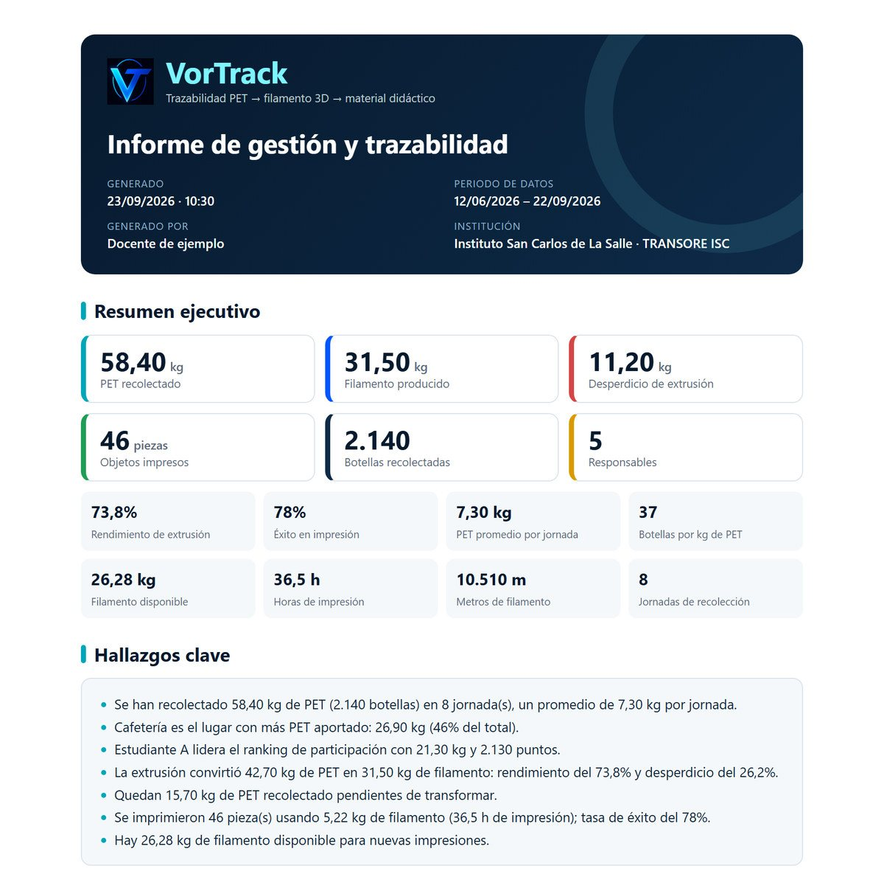
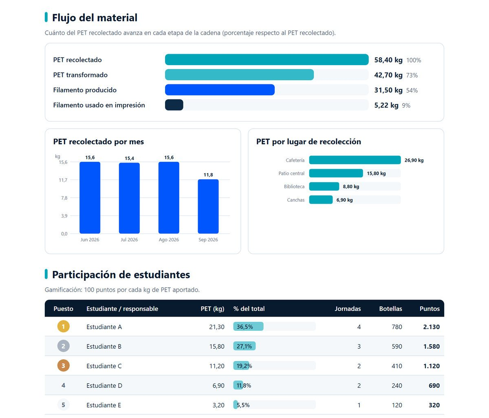

VorTrack es el software de escritorio del proyecto TRANSORE ISC del Instituto San Carlos de La Salle: registra, organiza y analiza el aprovechamiento del PET reciclado hasta convertirlo en material didáctico impreso en 3D.
Cada registro queda enlazado con el anterior: se sabe de qué jornada salió el filamento y con qué filamento se imprimió cada pieza. Toca cada paso.
Registra la operación diaria (recolección, transformación e impresión) y consulta el histórico. Su cuenta la crea el administrador.
Puede hacer todo lo del estudiante y además administra el sistema: cuentas, catálogos (lugares y modelos) y edición de registros.
Las mismas pantallas, campos, validaciones y mensajes de la aplicación de escritorio. Sigue los pasos: tu nombre aparecerá en el ranking y en el informe.
Demo web: los datos se guardan solo en este navegador. La aplicación real funciona en Windows con base de datos SQL Server. Los registros de ejemplo son ficticios.
Lugar y responsable → jornada de recolección → producción de filamento → impresión. Nada queda suelto.
Al elegir la jornada, el peso ingresado se copia solo y el desperdicio se calcula al escribir el peso salido.
Al elegir el modelo y la cantidad se proyectan los gramos y minutos de impresión. En el histórico, cuántas piezas alcanzan con un filamento.
Gamificación: cada estudiante suma 100 puntos por kg de PET aportado en sus jornadas.
Estudiantes, Lugares, Modelos, Recolecciones, Transformaciones e Impresiones. Las eliminaciones respetan la trazabilidad.
Las consultas se hacen todas a la vez con un indicador de porcentaje; las ventanas cambian con transiciones suaves.
Desde HISTÓRICO INFORMES, VorTrack arma un PDF con resumen ejecutivo, hallazgos redactados automáticamente, flujo del material, gráficos, ranking y tablas, y lo guarda en Descargas. En la demo puedes generar el tuyo.


El código está organizado con principios SOLID: cada capa depende solo de la de abajo y las dependencias se inyectan desde una raíz de composición.
Pantallas: login, inicio, recolección, transformación, impresión, histórico y administración, con una fábrica de widgets común.
Lógica de negocio: autenticación por rol, validaciones, proyecciones e informe PDF.
Repositorios por entidad: usuarios, jornadas, producción, fabricación, catálogos e indicadores.
SQL Server (base vortrack_db) con relaciones que garantizan la trazabilidad.
VorTrack sigue el rastro del PET reciclado hasta convertirse en material didáctico impreso, y le da al proyecto indicadores para fortalecer el control de procesos, generar métricas y apoyar la toma de decisiones.
Desarrollado por Miguel Ruiz Ramirez.
Soporte: vortrack.soporte@gmail.com